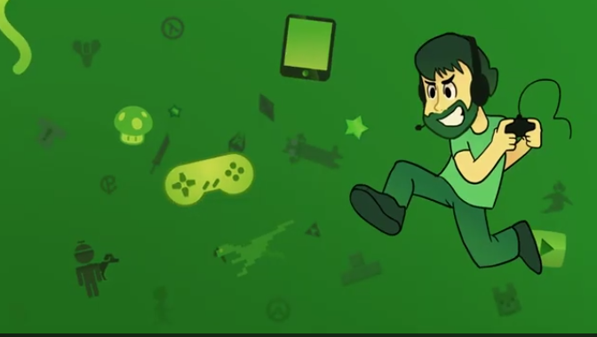
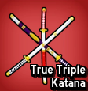
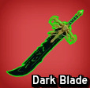
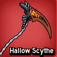
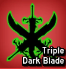
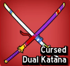

Dicas
Priorize missões da sua faixa de nível, use códigos oficiais quando existirem e mantenha frutas / espadas alinhadas ao seu estilo (grind x PvP).

Roblox · Blox Fruits
Dicas, truques e caminhos para evoluir no jogo — com foco em Blox Fruits. Conteúdo de fã para fã; confira sempre a wiki oficial no Fandom para dados atualizados pelo comunidade.
Blox Fruits é um jogo de ação e aventura no Roblox, inspirado na série One Piece: você explora ilhas, enfrenta inimigos, desbloqueia frutas do diabo com poderes especiais e melhora armas e espadas. O objetivo é progredir, farmar, fazer raids e PvP — cada update muda metas e itens, por isso guias fixos em página precisam ser cruzados com a wiki.
Priorize missões da sua faixa de nível, use códigos oficiais quando existirem e mantenha frutas / espadas alinhadas ao seu estilo (grind x PvP).
Aprenda combos com a sua arma, use dash e observação de padrões de boss; em PvP, espaço e timing valem mais que só dano bruto.
Antes de gastar Robux, confira se o item ainda é meta no patch atual — a wiki e canais confiáveis ajudam a evitar compra obsoleta.
Tabela resumida com base no seu guia original. Nomes e passos podem mudar com updates — valide na wiki de espadas.

Encontre o vendedor lendário, reúna as três espadas com maestria 300, fale com o NPC no Sea 2 e pague 2.000.000 B para forjar a TTK.

Obtida via game pass (valor em Robux; confira na loja atual do jogo).

Drop do boss de raid do Castelo Assombrado — chance baixa (~5%), exige farm de raid.

Disponível em contextos muito raros (competições PvP / eventos administrativos). Confirme no servidor oficial e na wiki.

Requer Yama e Tushita com maestria 350, acesso à sala secreta atrás da mansão, missões dos pergaminhos (6 etapas), fragmentos de Alucard e derrota ao boss final (dano só de espada). Guia passo a passo: wiki CDK (substitui link genérico).